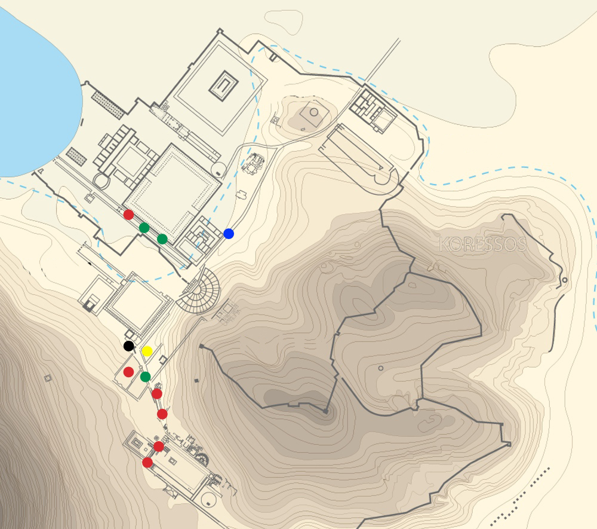
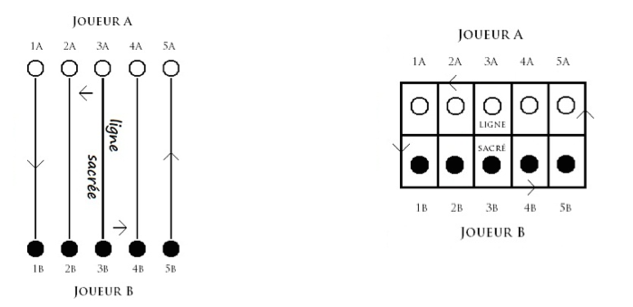
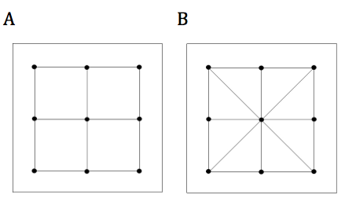

Jouer à Éphèse
Touchez une zone de la carte ou le nom d'un jeu pour obtenir des informations
| Le jeu des 5 lignes | Le jeu des onze lignes | La petite marelle |
| Le jeu des douze lignes | L’Alea | La piste de billes |
Le jeu des 5 lignes (pente grammai)
Ce jeu est déjà connu en Grèce antique dès la fin du VIIe siècle av. J.-C. Le plateau se compose de 5 lignes parallèles. La ligne médiane est appelée ligne sacrée, comme le décrit Julius Pollux (IIe s. apr. J.-C.) dans son dictionnaire:
Chaque joueur a 5 pièces sur 5 lignes. Sur les 5 lignes de chaque côté, celle du milieu est appelée ligne sacrée. Le fait de devoir déplacer une pièce arrivée sur cette ligne a donné naissance à l’expression il déplace la pièce de la ligne sacrée.
Le plateau peut aussi comporter deux rangées parallèles de cinq cases : les deux cases centrales représentent la ligne sacrée.
On joue à deux. Les joueurs sont assis devant les longs côtés du plateau de jeu. Chaque joueur a autant de pions que de lignes sur le plateau, c’est-à-dire 5. Chacun lance à tour de rôle un dé et déplace ses pions de case en case selon le résultat obtenu. Le but est de rassembler ses 5 pions sur les cases du milieu qui forment la ligne sacrée.
Le jeu des onze lignes
Dans plusieurs villes d’Asie Mineure, Ephèse, Smyrne et Aphrodisias, un grand nombre de plateaux de jeu comportaient deux rangées de onze cases. Ce jeu est probablement une variante d’époque romaine agrandie du jeu des cinq lignes. La ligne médiane devait correspondre à la ligne sacrée.
On joue à deux. Chaque joueur a autant de pions que de lignes sur le plateau, c’est-à-dire 11. Chacun lance à tour de rôle un dé et déplace ses pions de case en case selon le résultat obtenu. Le but est de rassembler ses 11 pions sur les cases du milieu qui forment « la ligne sacrée ».
Le jeu des douze lignes (ludus duodecim scripta)
Ce jeu romain très populaire appartient à la famille du backgammon et du trictrac. Il apparaît au plus tard au IIe s. av. J.-C. Le plateau se compose de trois rangées de 12 cases. Les règles précises sont inconnues. On joue à deux. Les joueurs ont chacun 15 pions et lancent à tour de rôle deux dés. Ils introduisent leurs pions sur le plateau dans la même rangée de cases selon le résultat obtenu.
Les pions font le tour du plateau et en ressortent. Deux pions ou plus sur une même case bloquent celle-ci et ne peuvent pas être mangés. Un pion capturé sur une case doit être réintroduit avant de continuer.
Certains plateaux de jeu montrent que la rangée du milieu avait une fonction particulière. Nous proposons d’y voir l’endroit pour « parquer » les pions capturés.
L'Alea
L’Alea est une variante du jeu des douze lignes (duodecim scripta). Ce jeu apparaît dès le IIIe siècle apr. J.-C. Comme le duodecim scripta, il se compose de trois rangées de 12 cases, mais il se distingue par l’emploi de 3 dés au lieu de 2, comme l’explique Isidore de Séville (VIIe s.), ce qui explique son changement de nom en Alea (« dés »)
La petite marelle
La petite marelle (nom latin inconnu) consiste en un carré traversé par deux lignes, verticalement et horizontalement (variante A) ou en diagonale (variante B). Chaque joueur possède 3 pions et les place à tour de rôle sur l’un des 9 points d’intersection des lignes. Une fois les trois pions placés, on les déplace le long des lignes d’un point à un point voisin. Le but du jeu est d’aligner 3 pions (faire « trois en ligne »).
Ovide (43 av. J.-C./18 apr. J.-C.) décrit ce jeu dans l’Art d’aimer III 365-366: « un petit plateau sur lequel sont placés trois pions en pierre, le gagnant est celui qui a aligné les siens ».
La piste de billes
De nombreuses pistes de billes sont visibles dans les villes romaines. Leur nom n’est pas conservé, et aucune règle n’est connue, mais il existait probablement beaucoup de variantes.
Deux lignes parallèles marquent le départ du lancer. Le but est d’atteindre le trou d’arrivée au bout de la piste en évitant les trous intermédiaires. Une variante : capturer les billes des autres joueurs en faisant glisser sa bille dans un trou contenant déjà une ou plusieurs billes.